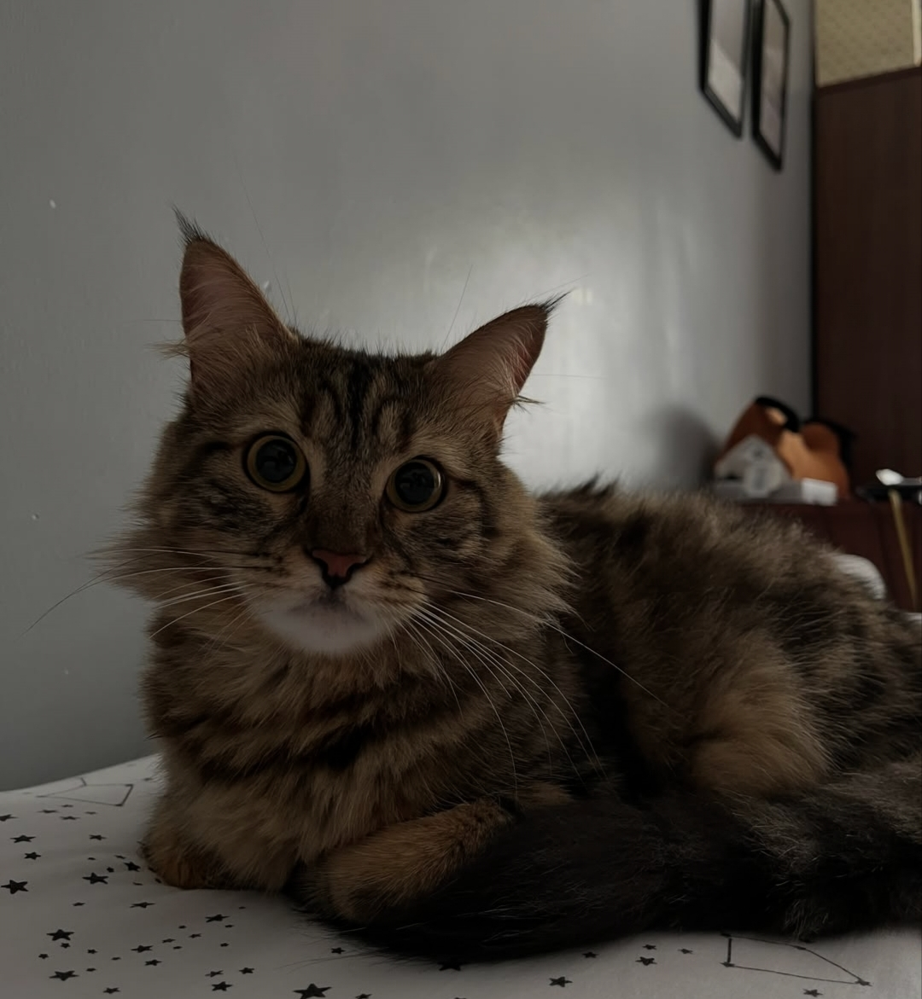
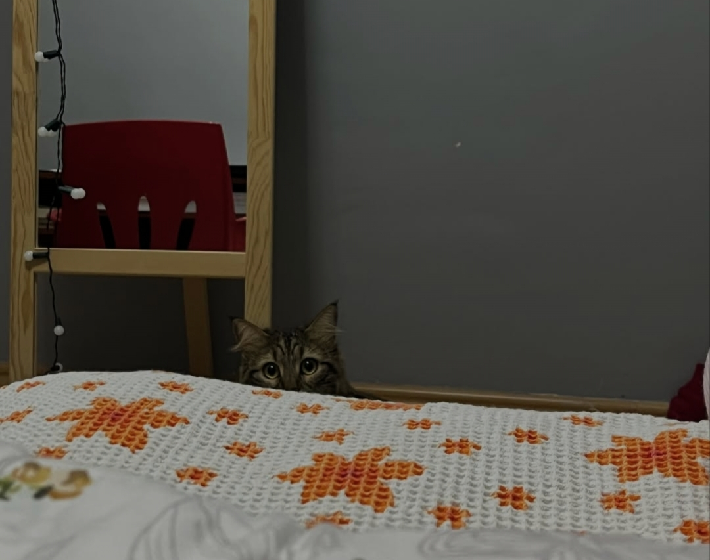
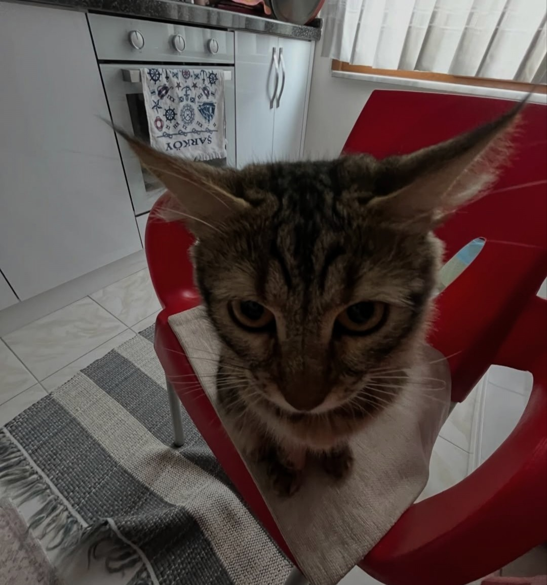
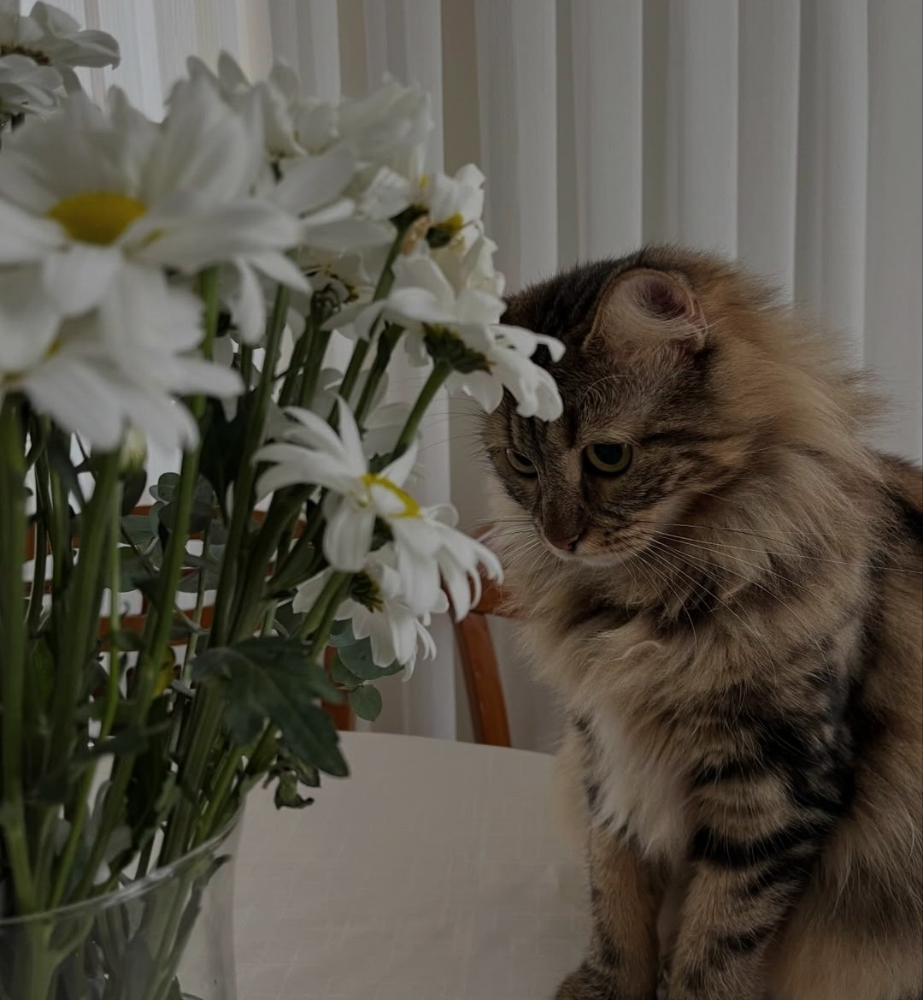
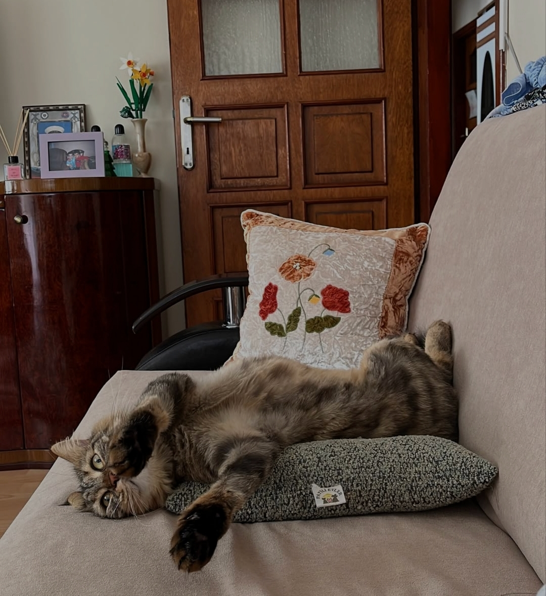
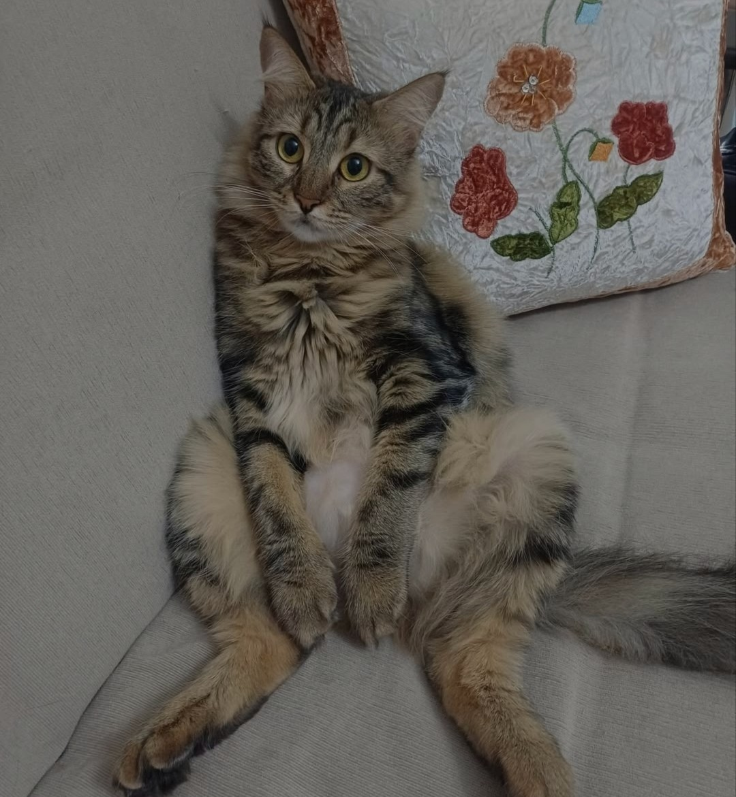
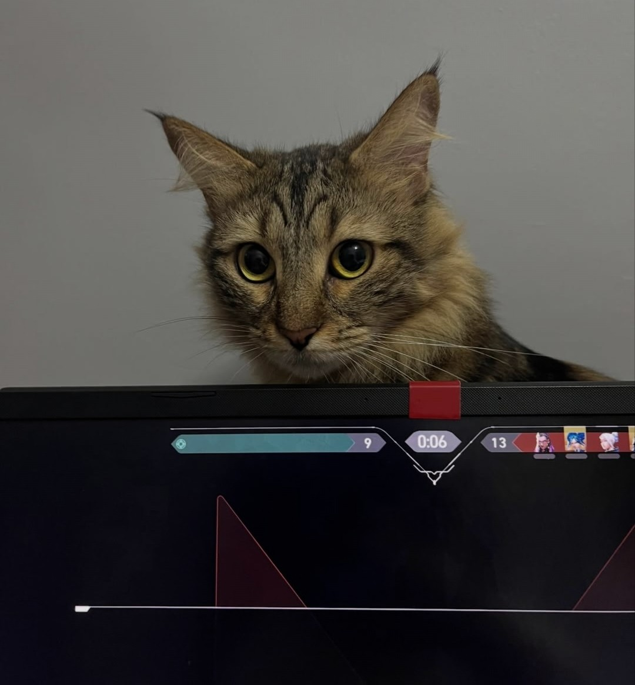
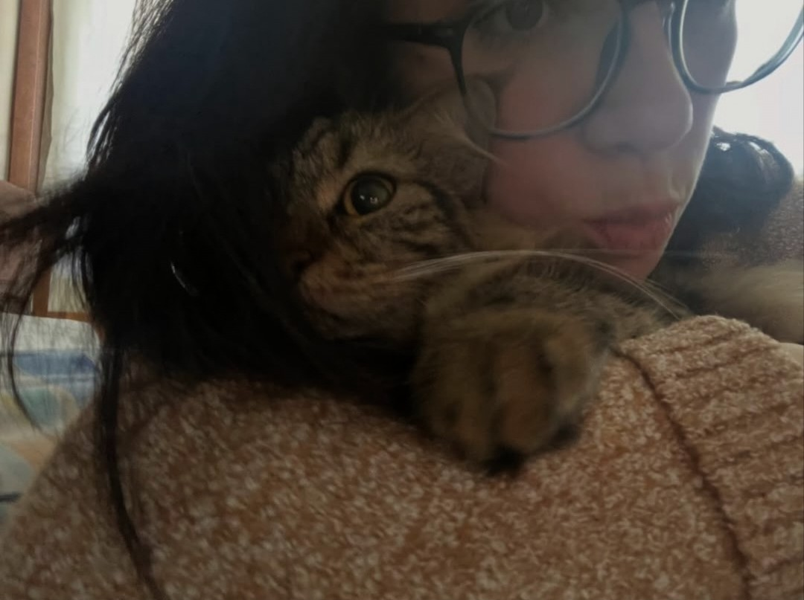
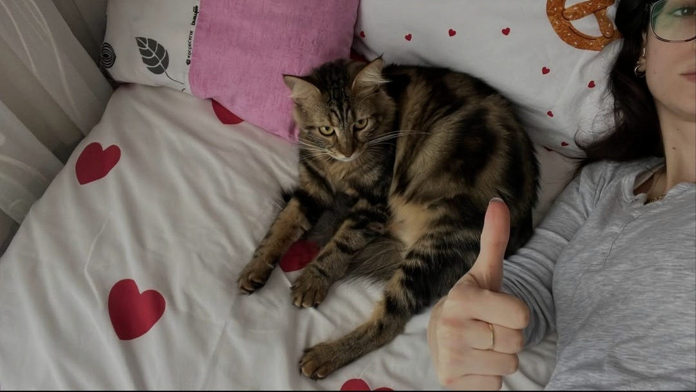

Merhaba, ben Mırmır.
Bu siteyi kendi patilerimle yaptım. Yazım hatası görürsen kusura bakma, klavye çok küçük, patilerim çok kabarık.
(bana tıklayabilirsin, biliyorum, karşı koyamıyorsun)
Resmi kimlik kartım
Devlet onaylı değil ama ev onaylı.

- Adı
- Mırmır
- Görünüş
- Uzun tüylü tekir. Alnımda "M" harfi var, adımın baş harfi. Tesadüf değil.
- Kulaklar
- Uçlarında vaşak püskülleri. Aksesuar değil, kişilik.
- Gözler
- Kocaman, kehribar rengi, genelde "ne bakıyorsun" modunda
- Mesleği
- Ev içi gözetim uzmanı, mutfak müfettişi, yarı zamanlı oyun koçu
- Özel yetenekleri
- İnsan gibi oturmak, omuzda taşınmak, yatağın kenarından casusluk
- Sahibi
- . Omzu evin en iyi koltuğu.
Günlük programım
Çok yoğun bir kediyim. Randevu için sekreterime (bana) ulaşın.







Beni sev
Bu buton benim. Ona basmak beni sevmek demek. Kurallar basit.
0
kez sevildim (hepsini sayıyorum)
Fotoğraf albümüm
Kötü açım yok. Büyütmek için tıkla.
Mırmır'dan günün notu
Her gün bir tane. Ya da canın istedikçe, ben kural koymam. (Koyarım.)
Evin kuralları
Ben yazdım, ben uyguluyorum.
- Laptopun üstü benim bölgemdir. Maçı kaybedersek suç kulaklığın.
- Omzuna çıkmak istersem çıkarım. Sen "hayır" dersen de çıkarım.
- Esnerken fotoğrafımı çekersen aslan olduğumu kabul etmiş sayılırsın.
- Masaya papatya konduğunda ilk ben incelerim. Güvenlik meselesi.
- yorgunsa yanına kıvrılırım. Bu kural pazarlığa kapalı.
Sahibime küçük bir not

Seni mutlu etmek benim işim. Genelde mırlayarak, omzuna tırmanarak ve arada bir ekranı kapatarak yapıyorum.
Ama bu sefer bu siteyi yapmak için biri bana yardım etti. Kim olduğunu söylemeyeceğim, kediler sır tutar.
Bugün özel bir gün değil, biliyorum. Sadece gülümsemen için yaptık.
— Mırmır 🐾